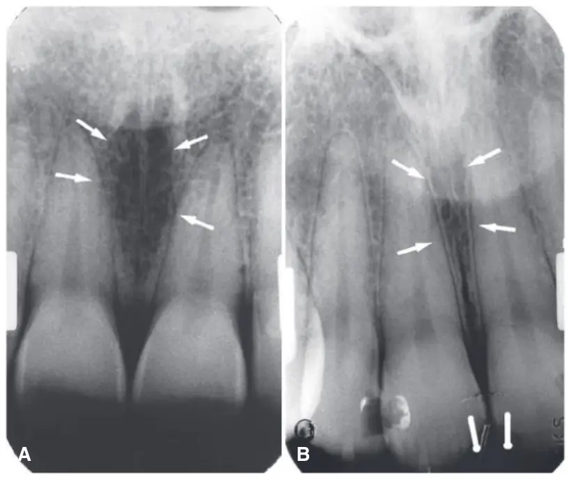
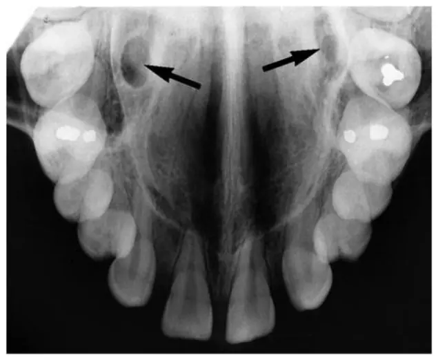

نسخه استخراجشده؛ ترجمه یا تأیید علمی انجام نشده است. وضعیت: captured
یک رادیولوسنسی بیضی میان ریشهی سانترالها. بیمار بیعلامت است. کیست نازوپالاتین؟ یا فقط آناتومی؟

آناتومی را اول بدان: کانال نازوپالاتین «در کف قدامی حفرهی بینی آغاز میشود و روی ماگزیلای قدامی بهعنوان سوراخ اینسایزیو خارج میشود» — در خط وسط، روی سطح قدامی زائدهی پالاتین و بلافاصله پالاتال به سانترالهای ماگزیلا.
داخل این سوراخ چه میگذرد؟ دو کانال جانبی به نام کانالهای اینسایزیو یا سوراخهای استنسن که «شاخهی انتهایی شریان پالاتین نزولی و عصب نازوپالاتین» را حمل میکنند. گاهی دو کانال اضافی در خط وسط هم وجود دارد: سوراخهای اسکارپا، حامل اعصاب نازوپالاتین.
روی تصویر چه میبینی؟ معمولاً میان ریشهها و در ناحیهی یکسوم میانی و آپیکالِ سانترالها پروجکت میشود؛ بهصورت یک رادیولوسنسی بیضی، اغلب با حاشیهی منتشر. گاهی دیوارههای جانبی کانال نازوپالاتین بهصورت یک جفت خط رادیواوپکِ عمودی دیده میشوند که از کف دهانهی بینی تا سوراخ اینسایزیو میآیند.
و چرا تصویرش اینقدر متغیر است؟ «تنوع گستردهای در ظاهر سوراخ اینسایزیو روی پریاپیکال وجود دارد... شکل، اندازه و وضوحش بهشدت متفاوت است. میتواند متقارن و صاف یا بسیار نامنظم باشد و حاشیههایش مشخص یا نامشخص.» موقعیت تصویرش هم متغیر است: «در آپکس ریشهی سانترالها، نزدیک کرست آلوئولار، هر جایی میان این دو، یا کشیده در تمام این فاصله».
دو علت این تنوع: «۱) زوایای متفاوتی که پرتو برای سانترالهای ماگزیلا به آن هدایت میشود و ۲) مقداری تنوع در اندازهی آناتومیک آن.» یعنی بخش عمدهی تنوع، از تکنیک میآید نه از بیمار.
حالا معیار افتراق از کیست — این را حفظ کن: «حضور کیست فرض میشود اگر پهنای سوراخ از ۱ سانتیمتر بیشتر شود یا اگر بزرگ شدن آن در رادیوگرافیهای متوالی نشان داده شود.»
و اشتباه رایج دوم: «روی پریاپیکال، رادیولوسنسی سوراخ اینسایزیو نرمال ممکن است روی آپکس یکی از سانترالها بیفتد و ضایعهی پریاپیکال را تقلید کند. حضور لامینا دورای دستنخورده پیرامون آن سانترال و نبود علائم بالینی نشاندهندهی نبود بیماری پریاپیکال است.»
و در CBCT: شکل و اندازهی سوراخ روی مقاطع اگزیال بهتر ارزیابی میشود و تنوع اندازهی کانال روی مقاطع ساژیتال. ارزیابی محل سوراخ و کانال «در برنامهریزی قرار دادن ایمپلنت در ماگزیلای قدامی اهمیت دارد».
سه ساختار دیگر که در ماگزیلای قدامی خودشان را به تصویر تحمیل میکنند — و یکیشان دقیقاً روی آپکس لترال مینشیند.

۱) حفرهی لترال (که حفرهی اینسایزیو هم نامیده میشود): «یک فرورفتگی ملایم در ماگزیلا نزدیک آپکس دندان لترال». روی پروجکشن پریاپیکال این ناحیه ممکن است بهطور منتشر رادیولوسنت دیده شود، سوپرایمپوز روی ریشهی لترال.
و قاعدهی افتراقش دقیقاً همان قاعدهی سوراخ اینسایزیو است: «لامینا دورای دستنخورده پیرامون ریشهی لترال، همراه با نبود علائم بالینی، نشاندهندهی نبود بیماری پریاپیکال است.» این جفتِ «لامینا دورا + بالین» را در سراسر ماگزیلای قدامی به کار ببر.
۲) نوک بینی. بافت نرم نوک بینی مکرراً در پروجکشن سانترال و لترال ماگزیلا دیده میشود، سوپرایمپوز روی ریشهی همین دندانها. تصویرش «ظاهری یکنواخت و کمی اوپک با حاشیهی تیز» دارد. گاهی نارین رادیولوسنت هم قابل تشخیصاند، «بهویژه وقتی از زاویهی عمودی تند استفاده شود».
چرا حاشیهی تیز مهم است؟ چون بافت نرمِ با مرز تیز، از یک ضایعهی استخوانی جدا میشود: ضایعهی درون استخوان معمولاً مرزش را با استخوان میسازد، نه با هوا. مرزِ ناگهانی و کاملاً تیز، نشانهی سایهی بافت نرم در برابر هوا است.
۳) کانال نازولاکریمال. استخوانهای بینی و ماگزیلا آن را میسازند. «از سمت داخلی حاشیهی قدامی-تحتانی اوربیت به سمت پایین میرود تا زیر کونشای تحتانی به حفرهی بینی تخلیه شود.» گاهی روی پریاپیکال «در ناحیهی بالای آپکس کانین» دیده میشود، بهویژه با زاویهی عمودی تند.
و یک نکتهی افتراقی مخصوص اکلوزال: کانالهای نازولاکریمال معمولاً روی پروجکشن اکلوزال ماگزیلا در ناحیهی مولرها دیده میشوند، بهصورت رادیولوسنسیهای بیضی. «نباید با سوراخهای پالاتین بزرگ اشتباه شوند، که روی پروجکشن اکلوزال ماگزیلا نمایان نمیشوند».
نوع سؤال: ساخت کلمه · 3 خانه
حروف منبع: ن · ت · د